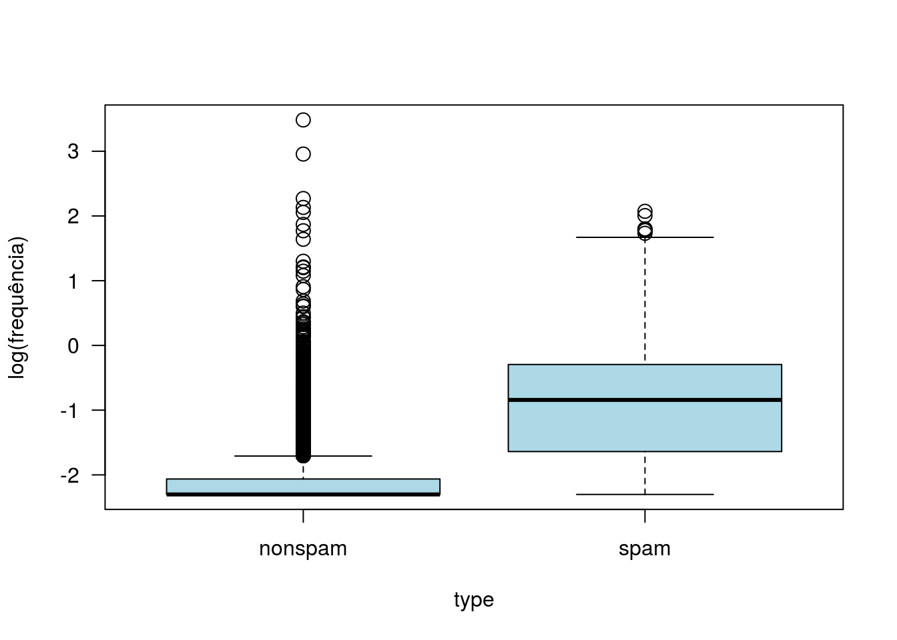
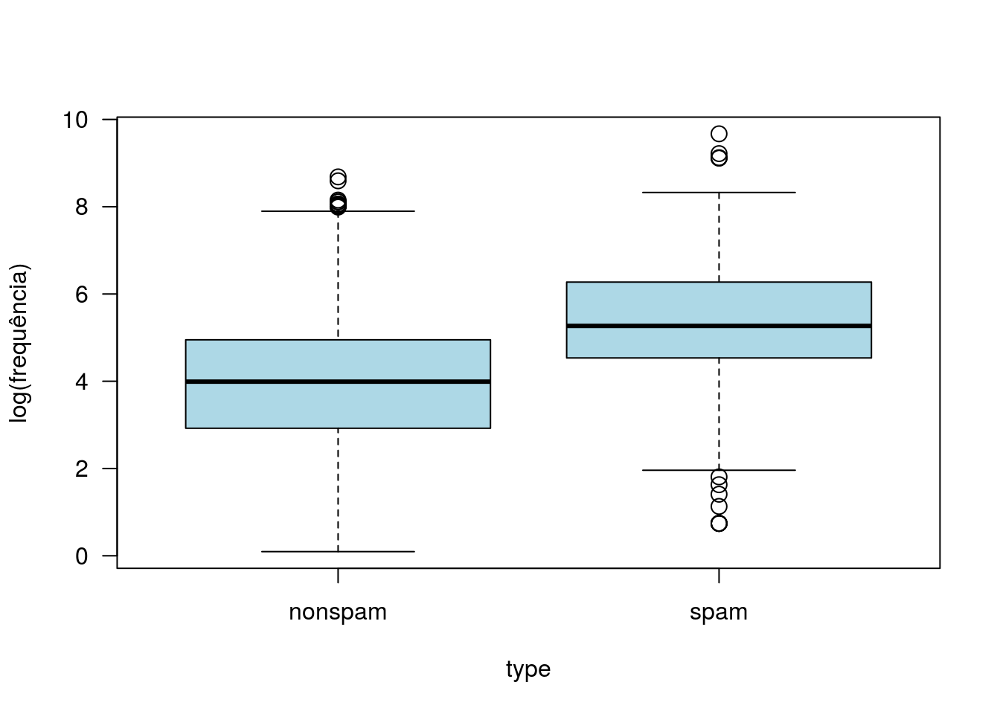
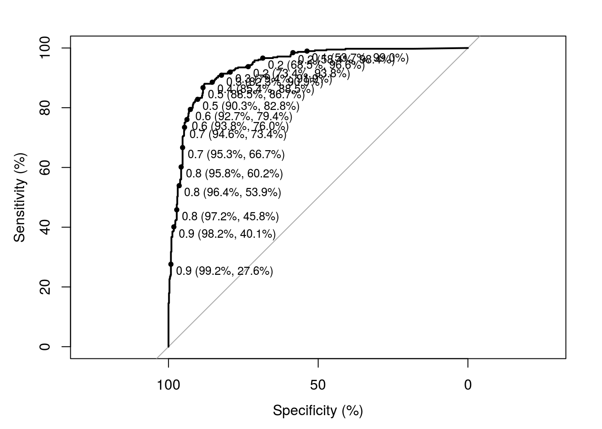

Vamos usar regressão logística para classificar e-mails como spams ou não spams segundo as frequências com que diferentes termos e caracteres aparecem no corpo da mensagem.
## make address all num3d
## Min. :0.0000 Min. : 0.000 Min. :0.0000 Min. : 0.00000
## 1st Qu.:0.0000 1st Qu.: 0.000 1st Qu.:0.0000 1st Qu.: 0.00000
## Median :0.0000 Median : 0.000 Median :0.0000 Median : 0.00000
## Mean :0.1046 Mean : 0.213 Mean :0.2807 Mean : 0.06542
## 3rd Qu.:0.0000 3rd Qu.: 0.000 3rd Qu.:0.4200 3rd Qu.: 0.00000
## Max. :4.5400 Max. :14.280 Max. :5.1000 Max. :42.81000
## our over remove internet
## Min. : 0.0000 Min. :0.0000 Min. :0.0000 Min. : 0.0000
## 1st Qu.: 0.0000 1st Qu.:0.0000 1st Qu.:0.0000 1st Qu.: 0.0000
## Median : 0.0000 Median :0.0000 Median :0.0000 Median : 0.0000
## Mean : 0.3122 Mean :0.0959 Mean :0.1142 Mean : 0.1053
## 3rd Qu.: 0.3800 3rd Qu.:0.0000 3rd Qu.:0.0000 3rd Qu.: 0.0000
## Max. :10.0000 Max. :5.8800 Max. :7.2700 Max. :11.1100
## order mail receive will
## Min. :0.00000 Min. : 0.0000 Min. :0.00000 Min. :0.0000
## 1st Qu.:0.00000 1st Qu.: 0.0000 1st Qu.:0.00000 1st Qu.:0.0000
## Median :0.00000 Median : 0.0000 Median :0.00000 Median :0.1000
## Mean :0.09007 Mean : 0.2394 Mean :0.05982 Mean :0.5417
## 3rd Qu.:0.00000 3rd Qu.: 0.1600 3rd Qu.:0.00000 3rd Qu.:0.8000
## Max. :5.26000 Max. :18.1800 Max. :2.61000 Max. :9.6700
## people report addresses free
## Min. :0.00000 Min. : 0.00000 Min. :0.0000 Min. : 0.0000
## 1st Qu.:0.00000 1st Qu.: 0.00000 1st Qu.:0.0000 1st Qu.: 0.0000
## Median :0.00000 Median : 0.00000 Median :0.0000 Median : 0.0000
## Mean :0.09393 Mean : 0.05863 Mean :0.0492 Mean : 0.2488
## 3rd Qu.:0.00000 3rd Qu.: 0.00000 3rd Qu.:0.0000 3rd Qu.: 0.1000
## Max. :5.55000 Max. :10.00000 Max. :4.4100 Max. :20.0000
## business email you credit
## Min. :0.0000 Min. :0.0000 Min. : 0.000 Min. : 0.00000
## 1st Qu.:0.0000 1st Qu.:0.0000 1st Qu.: 0.000 1st Qu.: 0.00000
## Median :0.0000 Median :0.0000 Median : 1.310 Median : 0.00000
## Mean :0.1426 Mean :0.1847 Mean : 1.662 Mean : 0.08558
## 3rd Qu.:0.0000 3rd Qu.:0.0000 3rd Qu.: 2.640 3rd Qu.: 0.00000
## Max. :7.1400 Max. :9.0900 Max. :18.750 Max. :18.18000
## your font num000 money
## Min. : 0.0000 Min. : 0.0000 Min. :0.0000 Min. : 0.00000
## 1st Qu.: 0.0000 1st Qu.: 0.0000 1st Qu.:0.0000 1st Qu.: 0.00000
## Median : 0.2200 Median : 0.0000 Median :0.0000 Median : 0.00000
## Mean : 0.8098 Mean : 0.1212 Mean :0.1016 Mean : 0.09427
## 3rd Qu.: 1.2700 3rd Qu.: 0.0000 3rd Qu.:0.0000 3rd Qu.: 0.00000
## Max. :11.1100 Max. :17.1000 Max. :5.4500 Max. :12.50000
## hp hpl george num650
## Min. : 0.0000 Min. : 0.0000 Min. : 0.0000 Min. :0.0000
## 1st Qu.: 0.0000 1st Qu.: 0.0000 1st Qu.: 0.0000 1st Qu.:0.0000
## Median : 0.0000 Median : 0.0000 Median : 0.0000 Median :0.0000
## Mean : 0.5495 Mean : 0.2654 Mean : 0.7673 Mean :0.1248
## 3rd Qu.: 0.0000 3rd Qu.: 0.0000 3rd Qu.: 0.0000 3rd Qu.:0.0000
## Max. :20.8300 Max. :16.6600 Max. :33.3300 Max. :9.0900
## lab labs telnet num857
## Min. : 0.00000 Min. :0.0000 Min. : 0.00000 Min. :0.00000
## 1st Qu.: 0.00000 1st Qu.:0.0000 1st Qu.: 0.00000 1st Qu.:0.00000
## Median : 0.00000 Median :0.0000 Median : 0.00000 Median :0.00000
## Mean : 0.09892 Mean :0.1029 Mean : 0.06475 Mean :0.04705
## 3rd Qu.: 0.00000 3rd Qu.:0.0000 3rd Qu.: 0.00000 3rd Qu.:0.00000
## Max. :14.28000 Max. :5.8800 Max. :12.50000 Max. :4.76000
## data num415 num85 technology
## Min. : 0.00000 Min. :0.00000 Min. : 0.0000 Min. :0.00000
## 1st Qu.: 0.00000 1st Qu.:0.00000 1st Qu.: 0.0000 1st Qu.:0.00000
## Median : 0.00000 Median :0.00000 Median : 0.0000 Median :0.00000
## Mean : 0.09723 Mean :0.04784 Mean : 0.1054 Mean :0.09748
## 3rd Qu.: 0.00000 3rd Qu.:0.00000 3rd Qu.: 0.0000 3rd Qu.:0.00000
## Max. :18.18000 Max. :4.76000 Max. :20.0000 Max. :7.69000
## num1999 parts pm direct
## Min. :0.000 Min. :0.0000 Min. : 0.00000 Min. :0.00000
## 1st Qu.:0.000 1st Qu.:0.0000 1st Qu.: 0.00000 1st Qu.:0.00000
## Median :0.000 Median :0.0000 Median : 0.00000 Median :0.00000
## Mean :0.137 Mean :0.0132 Mean : 0.07863 Mean :0.06483
## 3rd Qu.:0.000 3rd Qu.:0.0000 3rd Qu.: 0.00000 3rd Qu.:0.00000
## Max. :6.890 Max. :8.3300 Max. :11.11000 Max. :4.76000
## cs meeting original project
## Min. :0.00000 Min. : 0.0000 Min. :0.0000 Min. : 0.0000
## 1st Qu.:0.00000 1st Qu.: 0.0000 1st Qu.:0.0000 1st Qu.: 0.0000
## Median :0.00000 Median : 0.0000 Median :0.0000 Median : 0.0000
## Mean :0.04367 Mean : 0.1323 Mean :0.0461 Mean : 0.0792
## 3rd Qu.:0.00000 3rd Qu.: 0.0000 3rd Qu.:0.0000 3rd Qu.: 0.0000
## Max. :7.14000 Max. :14.2800 Max. :3.5700 Max. :20.0000
## re edu table conference
## Min. : 0.0000 Min. : 0.0000 Min. :0.000000 Min. : 0.00000
## 1st Qu.: 0.0000 1st Qu.: 0.0000 1st Qu.:0.000000 1st Qu.: 0.00000
## Median : 0.0000 Median : 0.0000 Median :0.000000 Median : 0.00000
## Mean : 0.3012 Mean : 0.1798 Mean :0.005444 Mean : 0.03187
## 3rd Qu.: 0.1100 3rd Qu.: 0.0000 3rd Qu.:0.000000 3rd Qu.: 0.00000
## Max. :21.4200 Max. :22.0500 Max. :2.170000 Max. :10.00000
## charSemicolon charRoundbracket charSquarebracket charExclamation
## Min. :0.00000 Min. :0.000 Min. :0.00000 Min. : 0.0000
## 1st Qu.:0.00000 1st Qu.:0.000 1st Qu.:0.00000 1st Qu.: 0.0000
## Median :0.00000 Median :0.065 Median :0.00000 Median : 0.0000
## Mean :0.03857 Mean :0.139 Mean :0.01698 Mean : 0.2691
## 3rd Qu.:0.00000 3rd Qu.:0.188 3rd Qu.:0.00000 3rd Qu.: 0.3150
## Max. :4.38500 Max. :9.752 Max. :4.08100 Max. :32.4780
## charDollar charHash capitalAve capitalLong
## Min. :0.00000 Min. : 0.00000 Min. : 1.000 Min. : 1.00
## 1st Qu.:0.00000 1st Qu.: 0.00000 1st Qu.: 1.588 1st Qu.: 6.00
## Median :0.00000 Median : 0.00000 Median : 2.276 Median : 15.00
## Mean :0.07581 Mean : 0.04424 Mean : 5.191 Mean : 52.17
## 3rd Qu.:0.05200 3rd Qu.: 0.00000 3rd Qu.: 3.706 3rd Qu.: 43.00
## Max. :6.00300 Max. :19.82900 Max. :1102.500 Max. :9989.00
## capitalTotal type
## Min. : 1.0 nonspam:2788
## 1st Qu.: 35.0 spam :1813
## Median : 95.0
## Mean : 283.3
## 3rd Qu.: 266.0
## Max. :15841.0Vamos selecionar apenas as covariáveis com frequência média superior a 0.2 para a sequência da análise.
Alguns gráficos
with(spam2, boxplot(log(charExclamation + 0.1) ~ type, ylab = 'log(frequência)',
col = 'lightblue', cex = 1.45, las = 1))
with(spam2, boxplot(log(capitalTotal + 0.1) ~ type, ylab = 'log(frequência)',
col = 'lightblue', cex = 1.45, las = 1))
Aparentemente, as frequências de pontos de exclamação ou letras maiúsculas são importantes para discriminar spams e não spams (spams têm maior frequência de ambos).
Vamos dividir a base em duas: uma para ajuste do modelo e outra para validação. A base de validação com 1000 observações e a de ajuste com as demais.
set.seed(88) # Fixando a semente para sorteio das observações.
select <- sample(1:nrow(spam2), 1000)Linhas da base que serão usadas para validação.
Vamos considerar diferentes abordagens:
Modelo 1 - GLM com todas as covariáveis;
## Warning: glm.fit: fitted probabilities numerically 0 or 1 occurredpred1 <- predict(modelo1, newdata = spam_predict, type = 'response')
head(round(pred1,5), n = 10) # Predições.## 2327 2129 669 3417 3229 3471 3669 1353 839
## 0.22983 0.01088 0.92569 0.00000 0.00000 0.00004 0.00000 0.78723 0.78501
## 2645
## 0.37904Tabela de confusão e medidas de performance preditiva
class1 <- ifelse(pred1 > 0.5, 'Class_spam', 'Class_nspam')
tabcruz <- table(class1, spam_predict$type)
tabcruz##
## class1 nonspam spam
## Class_nspam 556 66
## Class_spam 60 318## [1] 0.874## [1] 0.828125## [1] 0.9025974Com seleção do tipo Backward, via AIC
## Start: AIC=2354.97
## type ~ address + all + our + mail + will + free + you + your +
## hp + hpl + george + re + charExclamation + capitalAve + capitalLong +
## capitalTotal
##
## Df Deviance AIC
## - all 1 2321 2353
## <none> 2321 2355
## - address 1 2326 2358
## - capitalAve 1 2327 2359
## - will 1 2333 2365
## - hpl 1 2335 2367
## - capitalTotal 1 2343 2375
## - charExclamation 1 2373 2405
## - your 1 2415 2447
## - free 1 2446 2478
## - george 1 2642 2674
## - capitalLong 1 67402 67434
## - re 1 69132 69164
## - hp 1 73313 73345
## - our 1 73745 73777
## - you 1 73817 73849
## - mail 1 77494 77526
##
## Step: AIC=2353.19
## type ~ address + our + mail + will + free + you + your + hp +
## hpl + george + re + charExclamation + capitalAve + capitalLong +
## capitalTotal
##
## Df Deviance AIC
## <none> 2321 2353
## - address 1 2326 2356
## - capitalAve 1 2327 2357
## - will 1 2333 2363
## - capitalTotal 1 2343 2373
## - charExclamation 1 2373 2403
## - our 1 2384 2414
## - your 1 2418 2448
## - free 1 2447 2477
## - george 1 2645 2675
## - hp 1 37341 37371
## - capitalLong 1 45055 45085
## - hpl 1 56228 56258
## - re 1 56589 56619
## - you 1 61779 61809
## - mail 1 78143 78173Tabela de confusão e medidas de performance preditiva
class2 <- ifelse(pred2 > 0.5, 'Class_spam', 'Class_nspam')
tabcruz <- table(class2, spam_predict$type)
tabcruz##
## class2 nonspam spam
## Class_nspam 556 65
## Class_spam 60 319## [1] 0.875## [1] 0.8307292## [1] 0.9025974## Start: AIC=2460.19
## type ~ address + all + our + mail + will + free + you + your +
## hp + hpl + george + re + charExclamation + capitalAve + capitalLong +
## capitalTotal
##
## Df Deviance AIC
## - all 1 2321 2452
## - address 1 2326 2457
## - capitalAve 1 2327 2458
## <none> 2321 2460
## - will 1 2333 2464
## - hpl 1 2335 2467
## - capitalTotal 1 2343 2474
## - charExclamation 1 2373 2504
## - your 1 2415 2546
## - free 1 2446 2577
## - george 1 2642 2773
## - capitalLong 1 67402 67533
## - re 1 69132 69263
## - hp 1 73313 73444
## - our 1 73745 73876
## - you 1 73817 73948
## - mail 1 77494 77625
##
## Step: AIC=2452.21
## type ~ address + our + mail + will + free + you + your + hp +
## hpl + george + re + charExclamation + capitalAve + capitalLong +
## capitalTotal
##
## Df Deviance AIC
## - address 1 2326 2449
## - capitalAve 1 2327 2450
## <none> 2321 2452
## - will 1 2333 2455
## - capitalTotal 1 2343 2466
## - charExclamation 1 2373 2496
## - our 1 2384 2506
## - your 1 2418 2541
## - free 1 2447 2570
## - george 1 2645 2768
## - hp 1 37341 37464
## - capitalLong 1 45055 45177
## - hpl 1 56228 56351
## - re 1 56589 56711
## - you 1 61779 61902
## - mail 1 78143 78265
##
## Step: AIC=2448.94
## type ~ our + mail + will + free + you + your + hp + hpl + george +
## re + charExclamation + capitalAve + capitalLong + capitalTotal
##
## Df Deviance AIC
## - capitalAve 1 2332 2447
## <none> 2326 2449
## - will 1 2337 2452
## - capitalTotal 1 2348 2463
## - charExclamation 1 2379 2494
## - our 1 2389 2504
## - your 1 2424 2539
## - free 1 2453 2567
## - george 1 2649 2764
## - you 1 34458 34572
## - hp 1 38495 38609
## - hpl 1 61346 61461
## - capitalLong 1 74322 74437
## - mail 1 78575 78690
## - re 1 86455 86569
##
## Step: AIC=2446.54
## type ~ our + mail + will + free + you + your + hp + hpl + george +
## re + charExclamation + capitalLong + capitalTotal
##
## Df Deviance AIC
## - mail 1 2338 2444
## <none> 2332 2447
## - capitalTotal 1 2351 2458
## - you 1 2356 2463
## - charExclamation 1 2389 2495
## - our 1 2394 2501
## - hp 1 2445 2552
## - capitalLong 1 2457 2563
## - george 1 2649 2756
## - hpl 1 61563 61669
## - your 1 64230 64336
## - will 1 64590 64697
## - free 1 84414 84521
## - re 1 109249 109356
##
## Step: AIC=2444.44
## type ~ our + will + free + you + your + hp + hpl + george + re +
## charExclamation + capitalLong + capitalTotal
##
## Df Deviance AIC
## <none> 2338 2444
## - capitalTotal 1 2357 2455
## - you 1 2364 2463
## - charExclamation 1 2394 2492
## - our 1 2406 2504
## - re 1 2417 2515
## - your 1 2437 2535
## - free 1 2467 2565
## - capitalLong 1 2469 2567
## - george 1 2658 2756
## - hp 1 38927 39025
## - will 1 74322 74420
## - hpl 1 83549 83647Tabela de confusão e medidas de performance preditiva
class3 <- ifelse(pred3 > 0.5, 'Class_spam', 'Class_nspam')
tabcruz <- table(class3, spam_predict$type)
tabcruz##
## class3 nonspam spam
## Class_nspam 556 67
## Class_spam 60 317## [1] 0.873## [1] 0.8255208## [1] 0.9025974Com regularização, método lasso
x <- model.matrix(type ~ ., data = spam_ajuste)[, -1]
y <- ifelse(spam_ajuste$type == 'spam', 1, 0)
modelo4 <- glmnet(x, y, family = 'binomial', alpha = 1)
cvfit <- cv.glmnet(x, y, family = 'binomial', alpha = 1, nfolds = 10)
newx <- model.matrix(type ~ ., data = spam_predict)[, -1]
pred4 <- predict(modelo4, newx = newx, s = cvfit$lambda.min, type = 'response')Tabela de confusão e medidas de performance preditiva
class4 <- ifelse(pred4 > 0.5, 'Class_spam', 'Class_nspam')
tabcruz <- table(class4, spam_predict$type)
tabcruz##
## class4 nonspam spam
## Class_nspam 554 65
## Class_spam 62 319## [1] 0.873## [1] 0.8307292## [1] 0.8993506Com regularização, método ridge
x <- model.matrix(type ~ ., data = spam_ajuste)[, -1]
y <- ifelse(spam_ajuste$type == 'spam', 1, 0)
modelo5 <- glmnet(x, y, family = 'binomial', alpha = 0)
cvfit <- cv.glmnet(x, y, family = 'binomial', alpha = 0, nfolds = 10)
newx <- model.matrix(type ~ ., data = spam_predict)[, -1]
pred5 <- predict(modelo5, newx = newx, s = cvfit$lambda.min, type = 'response')Tabela de confusão e medidas de performance preditiva
class5 <- ifelse(pred5 > 0.5, 'Class_spam', 'Class_nspam')
tabcruz <- table(class5, spam_predict$type)
tabcruz##
## class5 nonspam spam
## Class_nspam 554 88
## Class_spam 62 296## [1] 0.85## [1] 0.7708333## [1] 0.8993506data.frame(Modelo = c('Modelo 1', 'Modelo 2', 'Modelo 3', 'Modelo 4', 'modelo 5'),
Acurácia = c(ac1, ac2, ac3, ac4, ac5), Sensibilidade = c(s1, s2, s3, s4, s5),
Especificidade = c(e1, e2, e3, e4, e5))## Modelo Acurácia Sensibilidade Especificidade
## 1 Modelo 1 0.874 0.8281250 0.9025974
## 2 Modelo 2 0.875 0.8307292 0.9025974
## 3 Modelo 3 0.873 0.8255208 0.9025974
## 4 Modelo 4 0.873 0.8307292 0.8993506
## 5 modelo 5 0.850 0.7708333 0.8993506Procurando as regras de classificação (pontos de corte) ótimos.
## Setting levels: control = nonspam, case = spam## Setting direction: controls < cases## Area under the curve: 93.8%
## threshold specificity sensitivity
## 0.4306366 87.9870130 88.0208333## Setting levels: control = nonspam, case = spam
## Setting direction: controls < cases## Area under the curve: 93.79%## threshold specificity sensitivity
## 0.4387975 88.1493506 87.7604167## Setting levels: control = nonspam, case = spam
## Setting direction: controls < cases## Area under the curve: 93.67%## threshold specificity sensitivity
## 0.4127096 87.0129870 87.5000000## Setting levels: control = nonspam, case = spam
## Setting direction: controls < cases## Area under the curve: 93.61%## threshold specificity sensitivity
## 0.4214727 87.1753247 87.5000000## Setting levels: control = nonspam, case = spam
## Setting direction: controls < cases## Area under the curve: 91.67%## threshold specificity sensitivity
## 0.4217696 85.5519481 84.6354167data.frame(Modelo = c('Modelo 1', 'Modelo 2', 'Modelo 3', 'Modelo 4', 'modelo 5'),
rbind(c1, c2, c3, c4, c5))## Modelo threshold specificity sensitivity
## c1 Modelo 1 0.4306366 87.98701 88.02083
## c2 Modelo 2 0.4387975 88.14935 87.76042
## c3 Modelo 3 0.4127096 87.01299 87.50000
## c4 Modelo 4 0.4214727 87.17532 87.50000
## c5 modelo 5 0.4217696 85.55195 84.63542Custos de má-classificação podem ser incorporados na seleção da melhor regra de classificação. A função coords, por default, identifica o ponto de corte tal que a soma sensibilidade + especificidade seja máxima. Podemos modificar este critério através da função best werights, em que declaramos:
1 - O custo relativo de um falso negativo quando comparado a um falso positivo;
2 - A prevalência ou proporção de casos (spams) na população.
Vamos considerar alguns cenários. Em todos os casos, Cn|s é o custo de classificar um spam como não spam, Cs|n o de classificar como spam um não spam e Ps é a prevalência de spams.
## threshold specificity sensitivity
## 0.6343966 94.6428571 75.0000000## threshold specificity sensitivity
## 0.5668292 93.1818182 78.9062500## threshold specificity sensitivity
## 0.4306366 87.9870130 88.0208333## threshold specificity sensitivity
## 0.9200617 99.0259740 36.7187500## threshold specificity sensitivity
## 0.4306366 87.9870130 88.0208333## threshold specificity sensitivity
## 0.2287856 71.2662338 95.8333333## threshold specificity sensitivity
## 0.2030385 68.8311688 96.6145833